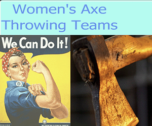

Ad with Action

The Ad with Action example shows a first draft for an interactive ad for a small start-up consumer business.
Their target market is found primarily on social media sites like Facebook and Instagram.
The ad shows an entertainment venue for ax-throwing, and a new women's league. The project included a new logo, the ad and a registration form with tracking.
Initial work with customer was for the selection of images, fonts, and a new Logo concept. Then we discussed what we were advertising for and where.

On the right is the first draft, which needs to slow down a bit. On the right we can see the new Logo concept.
This illustration is from a second customer meeting, were we discuss changes to crete a final format.